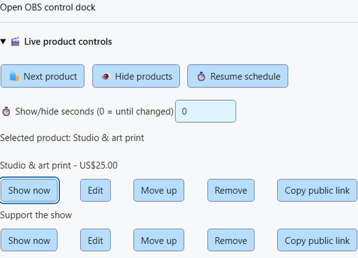

Use the monetization overlay as an OBS Browser Source for your audience. Operate it from SSN, Stream Deck or the API. A control dock can use the same API separately; operator controls do not belong on the audience overlay.
1. Add a product or support link
Open Monetization > Products & support links > Set up products and links. Paste a public HTTPS link and choose Load details from link. Quick import supports public Gumroad, itch.io, Ko-fi, Buy Me a Coffee and Fourthwall pages. Custom domains, redirects, private pages and pages without public metadata may need manual entry. The existing Shopify and Fourthwall API import options remain available.
Check the title, image, price, currency and purpose. Quick import deliberately leaves the price blank. Choose Add product or link, enable Products & support links, then Save setup. No merchant account is needed for manual cards.
Shop, Gift, Support and Join describe the link's purpose. They do not change the classification of later payment events. Cards are saved snapshots; checkout is the source of truth for stock and prices.
2. Control what appears
Add the existing Products & support links overlay URL to OBS. Use Showcase or Support card for promotions, or Both to include activity alerts.
- Show now on a saved row pins that product and overrides the periodic card schedule.
- Next product pins the next saved product.
- Hide products hides promotional cards. Purchase and gift alerts continue.
- Resume schedule restores the saved first-product or rotation settings.
Set Show/hide seconds before using a control. Zero lasts until changed; 1-3600 restores the saved schedule after that many seconds. Live overrides reset when SSN restarts. Unsaved rows are marked and their Show now buttons stay disabled until Save setup. The status names the selected product and shows remaining seconds; it does not claim that OBS is live or that this source is visible. Controls identify a product by its exact saved URL, so moving it in the list does not break an automation.
{kind=link}

3. Publish one viewer link
Open Display options > Public viewer page and choose Publish saved links. This explicitly publishes every saved product/support link, including titles, images, prices and purposes. Share Copy viewer link with your viewers. Product QR codes now use this stable page, so a viewer can still find a product after the overlay rotates.
Saved changes and live controls update the same URL. The viewer page checks for updates every 15 seconds and labels the featured product. It keeps the other links accessible when promotional cards are hidden. The last published catalog remains accessible while SSN is offline; the saved timestamp is shown, and featured means the last saved selection or rotation, not proof that the creator is live.
Unpublish removes the page; product QR codes return to individual product links. Open viewer pages clear within their next successful check. Previously shared URLs stop loading until you publish again. Publishing again from the same device restores the same URL. Keep the SSN device profile: its private publishing key is needed to update or remove the page.
If the API is unavailable, local controls still work. Failed updates leave the last published page visible and retry while SSN is open. The popup reports the failure. Publishing requires the optional public-shop service to be deployed; no store or payment account is involved.

Event Flow and remote controls
In Event Flow, add the Products & Support action from the overlay actions group. Select Show, Next, Hide or Resume; optionally set the exact saved product URL and seconds. Use an appropriate existing trigger, such as your own moderator command, rather than allowing every chat message to change products.
In the Stream Deck plugin, add Preset Command keys from Products & support: Show product, Next product, Hide products and Resume products. Show includes a saved-product picker; choose Refresh products and state to load the list. An unavailable saved selection stays visible instead of silently changing. You can still paste the public product URL, or leave it blank for the current/first product. Next and Hide take optional seconds. The keys wait for SSN to confirm the local change, independently of public-page updates. Add the optional Product State key for selected/hidden/scheduled feedback refreshed every five seconds while the key is visible. The inspector and SSN show the full product name; the small state key truncates long names. Use the existing P2P or WebSocket connection.
The existing authenticated session remote API accepts the same control:
{"action":"commerceControl","command":"show","url":"https://example.com/product","seconds":30}Commands are show, next, hide and resume. Omit URL to show the current/first product. Host controls must be enabled. Never share a private session/control URL with viewers; use the published viewer link.
These actions broadcast only the existing monetization_update display state. They do not create donations, purchases, chat posts or Event Flow payment triggers. Existing hasDonation behavior is unchanged.
Know when a control finished
The Products & Support action waits for SSN's reply before continuing the flow. On ordinary event payloads, meta.commerceControlResult contains success and either the resulting commerce control state or an error. A failure stops later actions in that chain; the original purchase or tip remains available to other flows and overlays. The state confirms SSN's selection, hidden state or schedule; OBS visibility remains separate.
If no reply arrives within eight seconds, the action reports a timeout. The control may still have applied: check the popup or dock state before retrying Next. External remote clients should use the existing request/reply protocol and check the returned result, rather than treating a sent command as success.
Other effects have their own feedback. Print Thermal Label reports meta.thermalPrintResult; a successful job submission does not confirm paper output. A synchronous Webhook action can return the HTTP status and response, and can block on failure. These are action results, not new payment events. See the event reference for the control result contract.
Creator store setup · Commerce sounds, actions and printing · Event reference
Prefer buttons inside OBS? Use the OBS product control dock alongside your audience Browser Source.